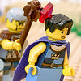
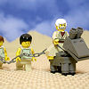

|
|
|
1 Kings 2
|
|
| 2:1 Now the days of David drew nigh that he should die; and he charged Solomon
his son, saying, |
David's Last Words
|
| 2:2
I go the way of all the earth: be thou strong therefore, and shew thyself
a man;
|
| 2:3
And keep the charge of the LORD thy God, to walk in his ways, to keep his
statutes, and his commandments, and his judgments, and his testimonies, as
it is written in the law of Moses, that thou mayest prosper in all that thou
doest, and whithersoever thou turnest thyself: |


 (2:1-9) (2:1-9)
In David's last words, he commands his son Solomon to murder Joab and Shimei.
(2:1) "Now the days of David drew nigh that he should die; and he charged Solomon
his son, saying ...
|
| 2:4
That the LORD may continue his word which he spake concerning me, saying,
If thy children take heed to their way, to walk before me in truth with all
their heart and with all their soul, there shall not fail thee (said he) a
man on the throne of Israel.
|
| 2:5
Moreover thou knowest also what Joab the son of Zeruiah did to me, and
what he did to the two captains of the hosts of Israel, unto Abner the son
of Ner, and unto Amasa the son of Jether, whom he slew, and shed the blood
of war in peace, and put the blood of war upon his girdle that was about his
loins, and in his shoes that were on his feet. |
(2:5-6) "Thou knowest ... what Joab ... did to me ... let not his hoar head go down to the grave in peace."
|
| 2:6
Do therefore according to thy wisdom, and let not his hoar head go down to the
grave in peace. |
|
| 2:7
But shew kindness unto the sons of Barzillai the Gileadite, and let them
be of those that eat at thy table: for so they came to me when I fled
because of Absalom thy brother. |
|
| 2:8
And, behold, thou hast with thee Shimei the son of Gera, a Benjamite of
Bahurim, which cursed me with a grievous curse in the day when I went to
Mahanaim: but he came down to meet me at Jordan, and I sware to him by the
LORD, saying, I will not put thee to death with the sword. |
(2:8-9) "Shimei ... cursed me with a grievous curse ... Now therefore hold him not guiltless: for thou art a wise man,
and knowest what thou oughtest to do unto him; but his hoar head bring thou down to the grave with blood."
(See 2 Sam.16:5-13 where Shimei rightly calls David “a bloody man.”)
|
| 2:9
Now therefore hold him not guiltless: for thou art a wise man, and knowest
what thou oughtest to do unto him; but his hoar head bring thou down to the grave with
blood. |
|
| 2:10
So David slept with his fathers, and was buried in the city of David. |
|
| 2:11
And the days that David reigned over Israel were forty years: seven years
reigned he in Hebron, and thirty and three years reigned he in Jerusalem. |
|
| 2:12
Then sat Solomon upon the throne of David his father; and his kingdom was
established greatly. |
|
| 2:13
And Adonijah the son of Haggith came to Bathsheba the mother of Solomon.
And she said, Comest thou peaceably? And he said,
Peaceably. |
Solomon Kills His Brother
|
| 2:14
He said moreover, I have somewhat to say unto thee. And she said, Say on.
|
| 2:15
And he said, Thou knowest that the kingdom was mine, and that all Israel
set their faces on me, that I should reign: howbeit the kingdom is turned
about, and is become my brother's: for it was his from the LORD.
|
| 2:16
And now I ask one petition of thee, deny me not. And she said unto him,
Say on. |
|
| 2:17
And he said, Speak, I pray thee, unto Solomon the king, (for he will not
say thee nay,) that he give me Abishag the Shunammite to wife. |
|
| 2:18
And Bathsheba said, Well; I will speak for thee unto the king. |
|
| 2:19
Bathsheba therefore went unto king Solomon, to speak unto him for
Adonijah. And the king rose up to meet her, and bowed himself unto her, and
sat down on his throne, and caused a seat to be set for the king's mother;
and she sat on his right hand. |
|
| 2:20
Then she said, I desire one small petition of thee; I pray thee, say me
not nay. And the king said unto her, Ask on, my mother: for I will not say
thee nay. |
|
| 2:21
And she said, Let Abishag the Shunammite be given to Adonijah thy brother
to wife. |
|
| 2:22
And king Solomon answered and said unto his mother, And why dost thou ask
Abishag the Shunammite for Adonijah? ask for him the kingdom also; for he is
mine elder brother; even for him, and for Abiathar the priest, and for Joab
the son of Zeruiah. |
|
| 2:23
Then king Solomon sware by the LORD, saying, God do so to me, and more
also, if Adonijah have not spoken this word against his own life. |
 (2:25) Solomon kills his brother.
(2:25) Solomon kills his brother.
Adonijah (Solomon's half-brother) sends Bathsheba (Solomon's mother) to ask King Solomon to
let Adonijah marry David's concubine Abishag. But
Solomon had him murdered instead.
(2:25) "King Solomon sent ... Benaiah the son of Jehoiada; and he fell upon him (Adonijah) that he
died."
|
| 2:24
Now therefore, as the LORD liveth, which hath established me, and set me
on the throne of David my father, and who hath made me an house, as he
promised, Adonijah shall
be put to death this day.
|
| 2:25
And king Solomon sent
by the hand of Benaiah the son of Jehoiada; and he fell upon him that he
died.
|
| 2:26
And unto Abiathar the priest said the king, Get thee to Anathoth, unto
thine own fields; for thou art worthy of death: but I will not at this time
put thee to death, because thou barest the ark of the LORD God before David
my father, and because thou hast been afflicted in all wherein my father was
afflicted. |
|
| 2:27
So Solomon thrust out Abiathar from being priest unto the LORD; that he
might fulfil the word of the LORD, which he spake concerning the house of
Eli in Shiloh. |
Solomon Kills Joab
|
| 2:28
Then tidings came to Joab: for Joab had turned after Adonijah, though he
turned not after Absalom. And Joab fled unto the tabernacle of the LORD, and
caught hold on the horns of the altar.
|
| 2:29
And it was told king Solomon that Joab was fled unto the tabernacle of the
LORD; and, behold, he
is by the altar. Then Solomon
sent Benaiah the son of Jehoiada, saying, Go, fall upon him. |
(2:29-46) Solomon carries out the deathbed wish of his father David by having Joab
and Shimei murdered.
God's 86th Killing
(2:29) "Solomon sent Benaiah ... saying, Go, fall upon him."
|
| 2:30
And Benaiah came to the tabernacle of the LORD, and said unto him, Thus
saith the king, Come forth. And he said, Nay; but I will die here. And
Benaiah brought the king word again, saying, Thus said Joab, and thus he
answered me.
|
| 2:31
And the king said unto
him, Do as he hath said, and fall upon him, and bury him; that thou mayest
take away the innocent blood, which Joab shed, from me, and from the house
of my father. |
(2:31-32) "And the king said unto
him ... fall upon him, and bury him; that thou mayest
take away the innocent blood, which Joab shed, from me, and from the house
of my father. And the LORD shall return his blood upon his own head."
|
| 2:32
And the LORD shall return his blood upon his own head, who fell upon two
men more righteous and better than he, and slew them with the sword, my
father David not knowing thereof, to wit, Abner the son of Ner, captain of
the host of Israel, and Amasa the son of Jether, captain of the host of
Judah. |
|
| 2:33
Their blood shall
therefore return upon the head of Joab, and upon the head of his seed for ever: but upon David,
and upon his seed, and upon his house, and upon his throne, shall there be peace for
ever from the LORD. |
(2:33a) "Their blood shall therefore return upon the head of Joab, and upon the head of his seed for ever."
Solomon justifies the murder of Joab by saying that Joab also was a murderer, and that the blood of Joab's victims
"shall therefore return upon the head of Joab, and upon the head of his seed for ever."
Are we punished for the sins of others?
(2:33b)"But upon David, and upon his seed, and upon his house ... shall there be peace for
ever from the LORD."
|
| 2:34
So Benaiah the son
of Jehoiada went up, and fell
upon him, and slew him: and he was buried in his own house in the wilderness.
|
| 2:35
And the king put Benaiah the son of Jehoiada in his room over the host:
and Zadok the priest did the king put in the room of Abiathar.
|
| 2:36
And the king sent and called for Shimei, and said unto him, Build thee an
house in Jerusalem, and dwell there, and go not forth thence any whither. |
Solomon Kills Shimei
|
| 2:37
For it shall be, that on the day thou goest out, and passest over the
brook Kidron, thou shalt know for certain that thou shalt surely die: thy
blood shall be upon thine own head.
|
| 2:38
And Shimei said unto the king, The saying is good: as my lord the king
hath said, so will thy servant do. And Shimei dwelt in Jerusalem many days. |
|
| 2:39
And it came to pass at the end of three years, that two of the servants of
Shimei ran away unto Achish son of Maachah king of Gath. And they told
Shimei, saying, Behold, thy servants be in Gath. |
|
| 2:40
And Shimei arose, and saddled his ass, and went to Gath to Achish to seek
his servants: and Shimei went, and brought his servants from Gath. |
|
| 2:41
And it was told Solomon that Shimei had gone from Jerusalem to Gath, and
was come again. |
|
| 2:42
And the king sent and called for Shimei, and said unto him, Did I not make
thee to swear by the LORD, and protested unto thee, saying, Know for a
certain, on the day thou goest out, and walkest abroad any whither, that
thou shalt surely die? and thou saidst unto me, The word that I have heard
is good. |
|
| 2:43
Why then hast thou not kept the oath of the LORD, and the commandment that
I have charged thee with? |
|
| 2:44
The king said moreover to Shimei, Thou knowest all the wickedness which
thine heart is privy to, that thou didst to David my father: therefore the LORD
shall return thy wickedness upon thine own head; |
(2:44-46) "The king said moreover to Shimei ... The Lord shall return thy
wickedness upon thine own head ... So the king commanded Benaiah ... which went out, and fell upon him, that he died."
|
| 2:45
And king Solomon shall be blessed, and the throne of David shall be
established before the LORD for ever.
|
| 2:46
So the king commanded
Benaiah the son of Jehoiada; which went out, and fell upon him, that he
died. And the kingdom was established in the hand of Solomon.
|
|